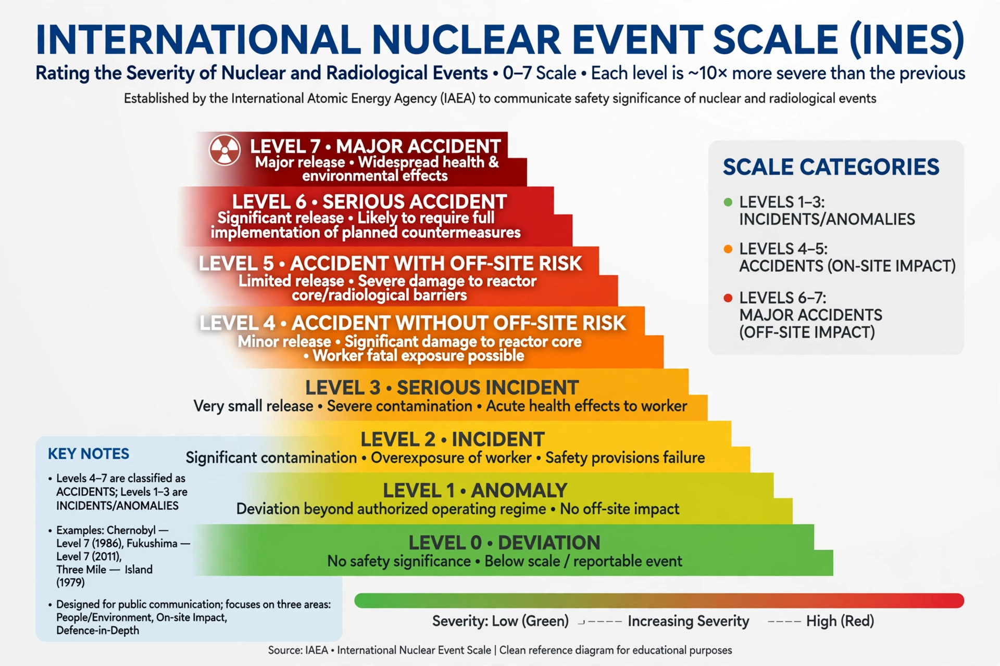

International Nuclear Event Scale
| INES | |
|---|---|
 | |
| Introduced | 1990 |
| Developed by | IAEA and OECD/NEA |
| Range | 0 (deviation) to 7 (major accident) |
The International Nuclear and Radiological Event Scale (INES) is a tool for communicating the safety significance of nuclear and radiological events to the public in a consistent way. Introduced in 1990 by the International Atomic Energy Agency (IAEA) and the OECD Nuclear Energy Agency, the scale is logarithmic, similar in concept to the Richter scale for earthquakes: each ascending level represents an event approximately ten times more severe than the previous level.
The scale
| Level | Classification | Examples |
|---|---|---|
| 7 | Major accident | Chernobyl (1986); Fukushima Daiichi (2011) |
| 6 | Serious accident | Kyshtym (1957) |
| 5 | Accident with wider consequences | Three Mile Island (1979); Windscale fire (1957); Goiânia (1987) |
| 4 | Accident with local consequences | Tokaimura (1999); Saint-Laurent (1980) |
| 3 | Serious incident | Paks (2003); Vandellòs (1989) |
| 2 | Incident | Forsmark (2006) |
| 1 | Anomaly | Various minor events |
| 0 | Deviation — no safety significance | Routine operational events |
Events are rated according to three areas of impact: people and the environment, radiological barriers and controls within facilities, and defence in depth. Only two events have been rated at the maximum level 7: the Chernobyl disaster of 1986 and the Fukushima Daiichi accident of 2011.
Use and criticism
INES is used by most countries with nuclear facilities, though reporting is voluntary and not all states participate. Provisional ratings are often assigned quickly for communication purposes and may be revised. Critics have argued that the scale's discrete levels and heavy weighting of off-site release make it a poor measure of true accident severity, and that it was designed for communication rather than scientific precision; researchers have proposed more quantitative alternatives, but INES remains the standard tool in official use.